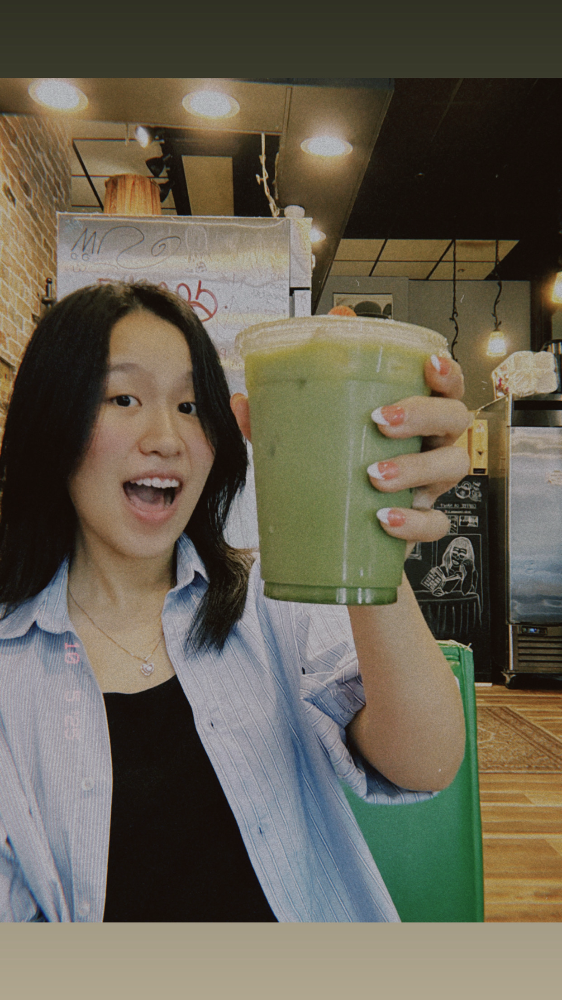

Hủ Tiếu Nam Vang

Couldn't find good Hủ Tiếu nearby — spent a weekend recreating it at home.

Data Science & CIS · Aspiring Product Manager
A small corner of the internet for projects, stories, and way too much enthusiasm about food.
Curious about who I am? You've come to the right place. I'm a Data Science and CIS student at Georgia State University who likes building things, telling stories, and occasionally cooking my way through a craving.
My Class WorkData Analyst, storyteller, and aspiring product manager, building at the intersection of data and human behavior.
I'm Hayley, a junior at Georgia State University's Honors College (Expected May 2027) with a double major in Computer Information Systems and Data Science. I build data products and AI-powered tools at the intersection of analytics and product thinking, working across Python, SQL, Power Automate, Databricks, and LangChain. My experience includes a BI & Analytics internship at Mativ Global where I architected an AR Insights Assistant chatbot on Databricks Genie Space integrated into Microsoft Teams, and designed a Tax Exemption Certificate automation pipeline using Power Automate and SharePoint with a human-in-the-loop approval system.
I've built end-to-end AI applications independently, including ImmiGuide, a RAG-based chatbot serving international students navigating F-1 visa processes, built on Google Gemini, LangChain, Chroma, and Streamlit. Prior to Mativ, I completed a data analytics internship at Atlas Wealth in London automating workflows with n8n, Zapier, and Salesforce. I'm passionate about building technology for underserved communities and pursuing a career in Product Management at an AI startup.
Mativ Global
Atlas Wealth · London
Asian American Student Organization, GSU
Georgia State University
Study Abroad Preparation
“I have no special talent. I am only passionately curious.”
— Albert Einstein
A hub for my course projects and assignments — updated as the semester goes on.
| Course | Type of Degree | Status |
|---|---|---|
| DSCI 4370 — Web Programming | Data Science | In Progress |
| CIS 3001 — Managing With AI | Business | In Progress |
| CIS 3300 — Systems Analysis | Business | In Progress |
| CSC 2720 — Data Structures | Data Science | Complete |
| CIS 3730 — Data Management For AI | Business | Complete |
| CIS 4394 — Agentic AI | Business | Complete |
A few things I've been building outside of class.
An AI chatbot helping international students navigate visa processes, built with LangChain.
View on GitHub →An AI airport companion app, pitched at Build X Hackathon.
View on GitHub →
Nấu và Ăn — cooking, eating, and connecting with people through food.
In my application essay to my dream college, I once wrote: “If you, a Nigerian, can eat phở with chopsticks, and I, a Vietnamese, can eat fufu with my hands, this world would have a lot less war.” Result: I didn't get in. Aftermath: I still live by that mindset.
Whenever I'm craving a dish I can't get my hands on, I cook it myself. Cooking for the people I love, and sharing that meal together, is a joy I can't quite put into words. (Oh, and I love eating.)
Couldn't find good Hủ Tiếu nearby — spent a weekend recreating it at home.

Slow simmer, taste as you go, and don't skip the fish sauce.

New country, same adventurous appetite.
Curiosity-driven learning for children in rural Vietnam.
Tò Mò is an idea I keep coming back to: an app designed to spark curiosity-driven learning for children in rural Vietnam, especially where engaging educational resources are limited. Instead of rote memorization, the goal is to reward asking questions, letting kids explore through stories, games, and small discoveries.
Curiosity is the thing that's gotten me the furthest in life, but it's not something every kid gets to nurture. Tò Mò is my attempt to change that, starting local, designing for low-bandwidth environments first.
These are the Vietnamese children that the world needs to know about.